source("R/packages.R") # all packages (Chapter 1)
source("R/settings.R") # waves, conditions, folders (Chapter 1)
df <- readRDS("cache/df.rds") # one row per questionnaire (Chapter 2)
df_wide <- readRDS("cache/df_wide.rds") # one row per person (Chapter 2)
item_names <- names(select(df, ListenOther1:CompetenceNonFrustrated4))
source("R/scales.R") # the 23 scales (Chapter 2)
source("R/measurement.R") # models of the constructs (Chapter 6)
source("R/longitudinal_models.R") # waves, at() (Chapter 7)
options(knitr.kable.NA = "") # empty cells stay empty in tables8. Simultaneous block models
NoteAbout this chapter
Chapters 6 and 7 model each construct alone. Here all constructs of one hypothesis block enter one factor model, which answers two questions a single construct cannot: are the constructs of a block empirically distinct (discriminant validity), and does the block as a whole stay invariant over time? Every block goes through the same seven steps: its model and the checks of its solution at each wave, then its latent correlations and the discriminant validity of its constructs, then its invariance over adjacent waves and over the whole year. As in Chapter 7, the checks come first, and a model whose solution is not possible, or that does not fit, stops: its estimates are not read. Two tables at the end put the three blocks side by side. Feeds the discriminant-validity paragraph and the block-level invariance table of the supplement.
8.1 How each block is examined
What happens to each block? All its constructs enter one confirmatory factor model. The block goes through seven steps in three parts: its model at each wave, the block over the waves, and what follows. The diagram shows the path; the list below describes each step.
flowchart TB
subgraph WAVE["at each wave"]
direction LR
S1["<b>Step 1</b><br>the model"] --> S2{{"<b>Step 2</b><br>possible? does it fit?"}}
S2 --> S3["<b>Step 3</b><br>latent correlations"]
S3 --> S4["<b>Step 4</b><br>discriminant validity"]
end
subgraph OVER["over the waves"]
direction LR
S5{{"<b>Step 5</b><br>adjacent waves:<br>possible? invariant?"}} --> S6{{"<b>Step 6</b><br>all four waves:<br>possible? invariant?"}}
end
V["<b>Step 7</b><br>what follows"]
WAVE --> OVER
OVER --> V
classDef all fill:#efeff2,stroke:#8a8a8a,color:#1d1d1f
classDef verdict fill:#ffffff,stroke:#1d1d1f,color:#1d1d1f
class S1,S2,S3,S4,S5,S6 all
class V verdict
style WAVE fill:#fafafa,stroke:#8a8a8a
style OVER fill:#fafafa,stroke:#8a8a8a
Two rules hold along the way. At each check (the hexagons), a model whose solution is not possible stops, as in Chapter 7, and so does a model that does not fit: its latent correlations are not read, and over the waves its further levels are not taken. Unlike Chapter 7, the block models are not adjusted until they become possible. Whether the measurement of each construct stays the same over the waves and in both groups is decided in Chapter 7, construct by construct; here the block models ask whether the constructs of a block are distinct, and over the waves they check the block as a whole.
Which persons? All persons together, at each wave: discriminant validity asks whether the questionnaire separates the constructs, a property of the measures that Chapter 6 settled on both groups together; whether the groups measure alike is tested in Chapter 7.
The seven steps in detail:
At each wave:
- The model. Which constructs and items the block holds, and its lavaan syntax at one wave. Each construct keeps its measurement model of Chapter 6; all factors of the block correlate freely.
- The checks at each wave. The model at T0, T1, T2 and T3, fitted with robust maximum likelihood (MLR) as in Chapters 6 and 7, goes first through checks 1 to 6 of Chapter 7 (7.1, Step 3): converged, no negative variance, no correlation beyond ±1, residual covariances and latent correlations positive definite, a standard error for every parameter. A wave whose solution is not possible stops there. Then the fit: it counts as acceptable from a robust CFI of .90, the threshold the configural models of Chapter 7 have to meet, and a wave whose model does not fit stops as well. Where the model strains shows in the modification indices
- of 20 or more.
- The latent correlations. How closely the constructs go together at each wave whose model is possible and fits, as a heat map.
- Discriminant validity. A pair of constructs counts as distinct when the upper bound of the 95 % confidence interval of its latent correlation stays below .90 (Rönkkö & Cho, 2022).
Over the waves:
- Adjacent waves. Configural, metric and scalar models for the three pairs of adjacent waves (T0–T1: the experimental group trains; T1–T2: maintenance; T2–T3: the control group trains). Each model is first checked, and a window is read level by level only as long as its models are possible and pass. The configural model needs a robust CFI of at least .90, and each further level holds when the robust CFI drops by no more than .010 and the robust RMSEA rises by no more than .015 (Chen, 2007).
- All four waves. The same three levels over the whole year, fitted with standard maximum likelihood, the saturated model their fit is measured against, and the same checks. Large models with many freely correlated factors and thin overlap between waves are prone to solutions at the boundary (Chen et al., 2001).
What follows:
- What follows. Which verdicts stand, and where the block goes from here.
8.2 Data and tools
Which models? Each construct keeps the items and the residual covariances of Chapter 6, now with marker identification throughout: the first item’s loading is 1, also for the two-item constructs, which the other factors of the block identify without equal loadings. Understood enters Listening and Togetherness as a factor with a single item, which carries its factor without error (residual variance 0). All factors of a block correlate freely. Over several waves, each construct has one factor per wave, and each item’s residual correlates with itself across the waves, as in Chapter 7. The metric level holds the loadings, the scalar level also the intercepts equal over the waves; at the scalar level the latent means are free from the second wave on. Two functions write the syntax, block_wave_model() for one wave and block_long_model() for several (tab Model syntax below). Two models are fitted again in this chapter, to show where their solutions break: Well-being at T2 (Step 2 of that block) and Cognitive Complexity over T0 and T1 at the metric level (Step 5 of that block).
How are they fitted? With MLR and full-information handling of missing answers, as in Chapters 6 and 7; only the four-wave models use standard maximum likelihood (Step 6). The models over several waves take hours, so all block models run in a script of their own (tab Model script). For every model it stores the fit indices (indices), the checks of its solution (checks: checks 1 to 6 of Chapter 7) and any negative variances (negative), for the models at one wave also the latent correlations (r) and the modification indices of 20 or more (mi). This chapter reads these results:
per_wave <- readRDS("cache/block_models_wave.rds") # 12 models
adjacent <- readRDS("cache/block_models_adjacent.rds") # 27 models
four_waves <- readRDS("cache/block_models_four.rds") # 9 models
saturated <- readRDS("cache/block_models_saturated.rds") # Step 6Which tools? The analysis of each step is written out for every block. The functions that write the model syntax, the script that fits the models, and the functions for the checks, the decisions and the figures are shown once here:
# Simultaneous block models (Chapter 8): all constructs of one hypothesis
# block in one factor model, at one wave or over several waves. Marker
# identification throughout, also for the two-item constructs; Understood
# enters H1 as a single-item factor (loading 1, residual variance 0).
# Needs R/measurement.R and R/longitudinal_models.R (at(), waves).
blocks <- list(
H1 = c("ListenOther", "ListenSelf", "Understood", "KamaMuta", "Resonance",
"Belongingness", "NoAlienation", "NoIsolation"),
H2 = c("Rogerian", "ParadoxMindset", "IntellectualHumility",
"ToleranceDiversity", "womenAttitude"),
H3 = c("Flourishing", "AutonomySatisfaction", "RelatednessSatisfaction",
"CompetenceSatisfaction", "AutonomyNonFrustrated",
"RelatednessNonFrustrated", "CompetenceNonFrustrated", "Empowerment",
"Agency", "IntellectualCapital")
)
block_items <- c(model_items, list(Understood = "Understood1"))
# all items of a block, as plain names
items_of <- \(block) list_c(block_items[block])
# one wave, long data: one factor per construct, all factors correlated
block_wave_model <- \(block) {
pairs <- residual_pairs |> filter(construct %in% block)
c(map_chr(block, \(c)
str_c(c, " =~ 1*", str_c(block_items[[c]], collapse = " + "))),
if ("Understood" %in% block) "Understood1 ~~ 0*Understood1",
str_c(pairs$item_a, " ~~ ", pairs$item_b)) |>
str_c(collapse = "\n")
}
# several waves, wide data: one factor per construct and wave; metric holds
# the loadings (l_), scalar also the intercepts (t_) equal over the waves
block_long_model <- \(block, level = c("configural", "metric", "scalar"),
over = waves) {
level <- match.arg(level)
pairs <- residual_pairs |> filter(construct %in% block)
per_construct <- map(block, \(c) {
items <- block_items[[c]]
labels <- if (level == "configural") rep("", length(items)) else
str_c("l_", c, seq_along(items), "*")
labels[1] <- "1*"
factor <- str_c(c, "_", over)
c(
# loadings
map2_chr(factor, over, \(f, w)
str_c(f, " =~ ", str_c(labels, at(items, w), collapse = " + "))),
# a single item carries its factor without error
if (length(items) == 1) str_c(at(items, over), " ~~ 0*", at(items, over)),
# intercepts (scalar) and latent means: 0, free after the first wave
# at the scalar level
if (level == "scalar") {
imap(items, \(item, j) str_c(at(item, over), " ~ t_", c, j, "*1")) |>
unlist()
},
str_c(factor, " ~ ", if (level == "scalar") {
c("0*1", rep("1", length(over) - 1))
} else {
"0*1"
}),
# autocorrelated residuals of multi-item constructs
if (length(items) > 1) {
map(items, \(item) map_chr(combn(over, 2, simplify = FALSE), \(p)
str_c(at(item, p[1]), " ~~ ", at(item, p[2])))) |>
unlist()
}
)
}) |>
unlist()
# residual covariances within each wave
within_waves <- map2(pairs$item_a, pairs$item_b, \(a, b)
str_c(at(a, over), " ~~ ", at(b, over))) |> unlist()
c(per_construct, within_waves) |> str_c(collapse = "\n")
}# Simultaneous block models of Chapter 8: per wave, over adjacent waves and
# over all four waves, for the three hypothesis blocks, and the saturated
# models behind the four-wave fit. Long: the models over several waves take
# hours. Each stage is saved as soon as it is done.
# Run from swt-website/ after Chapter 2: Rscript scripts/block_models.R
source("R/packages.R")
source("R/settings.R")
source("R/measurement.R")
source("R/longitudinal_models.R")
source("R/block_models.R")
df <- readRDS("cache/df.rds") # one row per questionnaire (Chapter 2)
df_wide <- readRDS("cache/df_wide.rds") # one row per person (Chapter 2)
log_step <- \(...) cat(format(Sys.time(), "%H:%M:%S"), ..., "\n")
# robust fit indices (MLR)
robust_fit <- \(fit) {
fitMeasures(fit, c("chisq.scaled", "df", "cfi.robust", "rmsea.robust",
"srmr")) |>
as.list() |>
as_tibble() |>
set_names(c("chisq", "df", "CFI", "RMSEA", "SRMR"))
}
# standard (ML) fit indices from the tests stored at fit time
standard_fit <- \(fit) {
model <- fit@test$standard
baseline <- fit@baseline$test$standard
n <- lavInspect(fit, "ntotal")
tibble(chisq = model$stat, df = model$df,
CFI = 1 - max(model$stat - model$df, 0) /
max(model$stat - model$df, baseline$stat - baseline$df, 0),
RMSEA = sqrt(max(model$stat - model$df, 0) / (model$df * n)),
SRMR = as.numeric(fitMeasures(fit, "srmr")))
}
# convergence and admissibility, with the smallest eigenvalues of the latent
# correlations and of the residual covariances (negative: not positive
# definite), the largest correlation among the factors and among the
# residuals, and whether every free parameter has a standard error: checks
# 1 to 6 of Chapter 7 (7.1, Step 3)
admissibility <- \(fit) {
theta <- lavInspect(fit, "theta")
smallest_eigen <- \(m) min(eigen(m, only.values = TRUE)$values)
correlations <- standardizedSolution(fit, se = FALSE, zstat = FALSE,
pvalue = FALSE, ci = FALSE) |>
filter(op == "~~", lhs != rhs)
se <- parTable(fit) |> filter(free > 0) |> pull(se)
tibble(converged = lavInspect(fit, "converged"),
admissible = isTRUE(suppressWarnings(lavInspect(fit, "post.check"))),
latent_eigen = smallest_eigen(cov2cor(lavInspect(fit, "cov.lv"))),
residual_eigen = smallest_eigen(theta),
negative_residuals = sum(diag(theta) < 0),
largest_r = max(abs(correlations$est.std)),
standard_errors = all(is.finite(se) & se > 0))
}
# negative variances with their z-test: a negative estimate that does not
# differ from 0 is sampling error at the boundary (Kolenikov & Bollen, 2012)
negative_variances <- \(fit) {
parameterEstimates(fit) |>
filter(op == "~~", lhs == rhs, est < 0) |>
select(variable = lhs, est, se, z, pvalue)
}
# latent correlations with 95 % CI
latent_r <- \(fit) {
factors <- lavNames(fit, "lv")
standardizedSolution(fit) |>
filter(op == "~~", lhs != rhs, lhs %in% factors, rhs %in% factors) |>
transmute(pair = str_c(lhs, " ~~ ", rhs), r = est.std, ci_low = ci.lower,
ci_high = ci.upper)
}
# 1. one wave at a time
log_step("per wave")
per_wave <- expand_grid(block = names(blocks), wave = waves) |>
mutate(fit = map2(block, wave, \(b, w) cfa(
block_wave_model(blocks[[b]]),
data = df |> filter(Occasion == w) |>
select(all_of(items_of(blocks[[b]]))),
estimator = "MLR", missing = "fiml.x")),
indices = map(fit, robust_fit),
checks = map(fit, admissibility),
negative = map(fit, negative_variances),
r = map(fit, latent_r),
mi = map(fit, \(f) modindices(f, sort. = TRUE) |>
filter(mi >= 20)))
saveRDS(select(per_wave, -fit), "cache/block_models_wave.rds")
# 2. adjacent waves: T0-T1, T1-T2, T2-T3
log_step("adjacent waves")
adjacent <- expand_grid(block = names(blocks),
window = list(c("T0", "T1"), c("T1", "T2"),
c("T2", "T3")),
level = c("configural", "metric", "scalar")) |>
mutate(window = map_chr(window, \(w) str_c(w, collapse = "-")))
adjacent <- adjacent |>
mutate(fit = pmap(list(block, window, level), \(b, w, l) {
log_step(b, w, l)
cfa(block_long_model(blocks[[b]], l, over = str_split_1(w, "-")),
data = df_wide, estimator = "MLR", missing = "fiml")
}),
indices = map(fit, robust_fit),
checks = map(fit, admissibility),
negative = map(fit, negative_variances))
saveRDS(select(adjacent, -fit), "cache/block_models_adjacent.rds")
# 3. the saturated model that the four-wave chi2 is measured against: does
# its EM estimate converge within the default 500 iterations, and how close
# to singular is its covariance matrix?
log_step("saturated models")
saturated_model <- \(b, iterations) {
converged <- TRUE
fit <- withCallingHandlers(
cfa(block_long_model(blocks[[b]], "configural"), data = df_wide,
estimator = "ML", missing = "fiml", do.fit = FALSE,
em.h1.iter.max = iterations),
warning = \(w) {
if (str_detect(conditionMessage(w), "Maximum number of iterations"))
converged <<- FALSE
invokeRestart("muffleWarning")
})
h1 <- fit@h1 # the saturated model
tibble(variables = length(lavNames(fit, "ov")),
logl = h1$logl$loglik,
converged = converged,
smallest_eigen = min(eigen(h1$implied$cov[[1]],
only.values = TRUE)$values))
}
saturated <- expand_grid(block = names(blocks), iterations = c(500, 20000)) |>
mutate(h1 = map2(block, iterations, saturated_model)) |>
unnest(h1)
saveRDS(saturated, "cache/block_models_saturated.rds")
# 4. all four waves, with standard maximum likelihood (the robust
# corrections of MLR break down for models of this size) and enough EM
# iterations for the saturated model to converge (stage 3)
log_step("four waves")
four_waves <- expand_grid(block = names(blocks),
level = c("configural", "metric", "scalar")) |>
mutate(fit = map2(block, level, \(b, l) {
log_step(b, l)
cfa(block_long_model(blocks[[b]], l), data = df_wide,
estimator = "ML", missing = "fiml", em.h1.iter.max = 20000)
}),
indices = map(fit, standard_fit),
checks = map(fit, admissibility),
negative = map(fit, negative_variances))
saveRDS(select(four_waves, -fit), "cache/block_models_four.rds")
log_step("done")# ✓ or ✗
mark <- \(x) if_else(x, "✓", "✗")
# checks 1 to 6 of Chapter 7 (7.1, Step 3), from what the script stored for
# each model: did the estimation converge, and is the solution proper? The
# tolerance for an eigenvalue at 0 is lavaan's own: a residual variance
# fixed at 0, as for Understood, sits on the boundary without crossing it
with_checks <- \(models) {
above_0 <- \(x) x > -.Machine$double.eps^(3 / 4)
models |>
unnest(checks) |>
mutate(estimation = converged,
variances = map_int(negative, nrow) == 0,
correlations = largest_r <= 1,
residuals = above_0(residual_eigen),
factors = above_0(latent_eigen),
`standard errors` = standard_errors,
possible = estimation & variances & correlations &
residuals & factors & `standard errors`)
}
# the six checks of each model side by side, and whether it is possible
checks_table <- \(models, ...) {
models |>
select(..., estimation:possible) |>
mutate(across(estimation:possible, mark))
}
# the smallest eigenvalue of the residual covariances and of the latent
# correlations of each model, against 0 (dashed): below it, the matrix is
# not positive definite and the model is not possible
plot_eigenvalues <- \(models, label) {
models |>
transmute(model = {{ label }},
`residual covariances` = residual_eigen,
`latent correlations` = latent_eigen) |>
pivot_longer(-model, names_to = "matrix", values_to = "eigenvalue") |>
mutate(model = fct_rev(fct_inorder(model)),
matrix = fct_inorder(matrix),
below = eigenvalue < -.Machine$double.eps^(3 / 4)) |>
ggplot(aes(eigenvalue, model, colour = below)) +
geom_vline(xintercept = 0, colour = "#e34948", linetype = "dashed") +
geom_point(size = 3) +
facet_wrap(~ matrix, scales = "free_x") +
scale_colour_manual(values = c(`FALSE` = "grey35", `TRUE` = "#e34948"),
guide = "none") +
labs(x = "smallest eigenvalue", y = NULL) +
theme_minimal(base_size = 12) +
theme(panel.grid.minor = element_blank(),
panel.spacing.x = unit(2, "lines"))
}# the verdict on each model of a window, level by level: the configural
# model needs a robust CFI of at least .90, each further level a drop in
# CFI of at most .010 and a rise in RMSEA of at most .015 (Chen, 2007). A
# model is read only when every model before it in the window is possible
# and passes; the first that is not possible, does not fit or does not
# hold stops the window
step_verdicts <- \(steps) {
steps |>
mutate(delta_CFI = CFI - lag(CFI),
delta_RMSEA = RMSEA - lag(RMSEA),
passes = if_else(level == "configural", CFI >= .90,
delta_CFI >= -.010 & delta_RMSEA <= .015),
reached = lag(cumall(possible & passes), default = TRUE),
read = reached & possible,
verdict = case_when(!reached ~ "not read",
!possible ~ "not possible",
passes ~ "holds",
level == "configural" ~ "does not fit",
.default = "does not hold"),
.by = window)
}
# the fit of each model and its verdict; empty where the model is not read
fit_table <- \(steps) {
steps |>
mutate(across(c(chisq, df, CFI, RMSEA, delta_CFI, delta_RMSEA),
\(x) if_else(read, round(x, 3), NA))) |>
select(window, level, chisq, df, CFI, RMSEA, delta_CFI, delta_RMSEA,
verdict)
}
# the result of a window in words: the highest level that holds, and
# where the window stops
window_result <- \(level, verdict) {
held <- level[verdict == "holds"]
stop <- which(verdict %in% c("not possible", "does not fit",
"does not hold"))[1]
if (length(held) == length(level)) return(last(held))
stopped <- str_c(level[stop], " ", verdict[stop])
if (length(held) == 0) stopped else str_c(last(held), "; ", stopped)
}
# the path of a block through the levels, one row per window: each tile a
# model, coloured by its verdict, with its robust CFI where it is read
verdict_colours <- c(holds = "#cdeee0", `does not fit` = "#fbdcc9",
`does not hold` = "#fbdcc9",
`not possible` = "#f6cfcf", `not read` = "#efeff2")
plot_chain <- \(steps) {
steps |>
mutate(level = factor(level, levels = c("configural", "metric",
"scalar")),
window = fct_rev(fct_inorder(window)),
label = if_else(read, str_c(verdict, "\nCFI ", apa(CFI, 3)),
verdict)) |>
ggplot(aes(level, window, fill = verdict)) +
geom_tile(colour = "white", linewidth = 2) +
geom_text(aes(label = label), size = 3.6, lineheight = .9) +
scale_fill_manual(values = verdict_colours, guide = "none") +
scale_x_discrete(position = "top") +
labs(x = NULL, y = NULL) +
theme_minimal(base_size = 12) +
theme(panel.grid = element_blank())
}# the latent correlations of a block as a lower triangle, one panel per
# wave: blue positive, red negative, grey near zero; framed: the pairs that
# are not distinct (upper bound of the 95 % CI at .90 or above)
plot_latent_r <- \(r, constructs) {
labels <- set_names(scales$label, scales$scale)[constructs]
r |>
separate_wider_delim(pair, " ~~ ", names = c("column", "row")) |>
mutate(row = factor(labels[row], levels = rev(labels)),
column = factor(labels[column], levels = labels)) |>
ggplot(aes(column, row, fill = r)) +
geom_tile(colour = "white", linewidth = 1) +
geom_tile(data = \(d) filter(d, ci_high >= .90), fill = NA,
colour = "black", linewidth = .7) +
geom_text(aes(label = apa(r)), size = 3) +
facet_wrap(~ wave, ncol = 2) +
scale_fill_gradient2(low = "#e34948", mid = "#f0efec", high = "#2a78d6",
limits = c(-1, 1)) +
labs(x = NULL, y = NULL, fill = "r") +
theme_minimal(base_size = 11) +
theme(panel.grid = element_blank(),
axis.text.x = element_text(angle = 45, hjust = 1))
}8.3 The three blocks
Listening and togetherness (H1)
Its path through the steps. One row per decision below; every step uses all persons at the waves it names all persons:
| Step | Question | Result | Next |
|---|---|---|---|
| 2 | Possible at each wave? | yes, at all four | fit |
| 2 | Fits at each wave? | yes, at all four | correlations |
| 4 | Constructs distinct? | yes, apart from one pair at T2 | over the waves |
| 5 | Adjacent waves possible and invariant? | yes: scalar in all three windows | all four waves |
| 6 | All four waves possible? | no: stops | what follows |
| 7 | What follows | distinct; scalar from wave to wave | Chapters 9 to 12 |
At each wave · Steps 1 to 4
Step 1 · The model all persons
Which constructs enter the block? Eight, each with the items it keeps in Chapter 6 (by number):
scales |>
filter(block == "H1") |>
transmute(construct = scale, label,
items = map_chr(scale, \(s) block_items[[s]] |>
str_remove(s) |>
str_flatten_comma()))| construct | label | items |
|---|---|---|
| ListenOther | Others Listen to Me | 1, 2 |
| ListenSelf | I Listen | 1, 2 |
| Understood | Understood | 1 |
| KamaMuta | Kama Muta | 1, 2 |
| Resonance | Positivity Resonance | 1, 2, 3, 4, 5, 6, 7, 8 |
| Belongingness | Belongingness | 1, 2, 3 |
| NoAlienation | No Alienation | 1, 2 |
| NoIsolation | No Isolation | 1, 2 |
How is the block written? At one wave, in full:
block_wave_model(blocks$H1) |> cat("\n")ListenOther =~ 1*ListenOther1 + ListenOther2
ListenSelf =~ 1*ListenSelf1 + ListenSelf2
Understood =~ 1*Understood1
KamaMuta =~ 1*KamaMuta1 + KamaMuta2
Resonance =~ 1*Resonance1 + Resonance2 + Resonance3 + Resonance4 + Resonance5 + Resonance6 + Resonance7 + Resonance8
Belongingness =~ 1*Belongingness1 + Belongingness2 + Belongingness3
NoAlienation =~ 1*NoAlienation1 + NoAlienation2
NoIsolation =~ 1*NoIsolation1 + NoIsolation2
Understood1 ~~ 0*Understood1
Resonance1 ~~ Resonance2
Resonance4 ~~ Resonance5 One line per construct, with its first item as the marker; the eight factors correlate freely (the default of cfa()). Understood1 ~~ 0*Understood1 lets the single item carry its factor without error, and the last two lines are the residual covariances of Positivity Resonance (Chapter 6). The model holds 22 items.
Next → Step 2, the checks of the model at each wave and its fit.
Step 2 · The checks at each wave all persons
Is the solution possible at each wave? Checks 1 to 6 of Chapter 7, as the script stored them for the model at each wave:
h1_waves <- per_wave |>
filter(block == "H1") |>
with_checks()
checks_table(h1_waves, wave)| wave | estimation | variances | correlations | residuals | factors | standard errors | possible |
|---|---|---|---|---|---|---|---|
| T0 | ✓ | ✓ | ✓ | ✓ | ✓ | ✓ | ✓ |
| T1 | ✓ | ✓ | ✓ | ✓ | ✓ | ✓ | ✓ |
| T2 | ✓ | ✓ | ✓ | ✓ | ✓ | ✓ | ✓ |
| T3 | ✓ | ✓ | ✓ | ✓ | ✓ | ✓ | ✓ |
How far are the two matrices from the boundary? The smallest eigenvalue of the residual covariances (check 4) and of the latent correlations (check 5) at each wave; below the dashed line a matrix is not positive definite:
plot_eigenvalues(h1_waves, wave)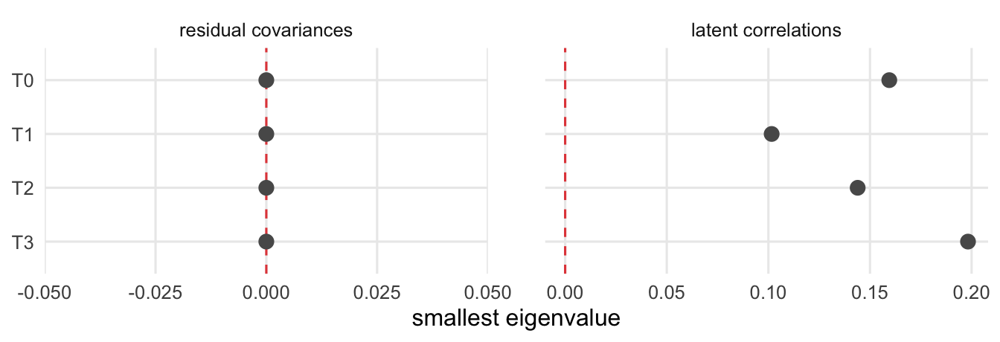
The solution is possible at all four waves. The smallest eigenvalue of the residual covariances is exactly 0 at every wave, because the residual variance of Understood is fixed at 0 (Step 1): the matrix sits on its boundary without crossing it. The latent correlations stay clear of it (smallest eigenvalue .102 or more).
Does the block fit at each wave? The fit, the number of residual covariances and loadings with an MI of 20 or more (large_mi), and whether the model fits (fits, a robust CFI of at least .90):
h1_fit <- h1_waves |>
filter(possible) |>
transmute(wave, indices, large_mi = map_int(mi, nrow)) |>
unnest(indices) |>
mutate(fits = CFI >= .90)
h1_fit |> mutate(across(where(is.double), \(x) round(x, 3)))| wave | chisq | df | CFI | RMSEA | SRMR | large_mi | fits |
|---|---|---|---|---|---|---|---|
| T0 | 342.479 | 180 | 0.949 | 0.056 | 0.042 | 4 | TRUE |
| T1 | 345.521 | 180 | 0.948 | 0.063 | 0.045 | 8 | TRUE |
| T2 | 293.940 | 180 | 0.965 | 0.050 | 0.044 | 1 | TRUE |
| T3 | 360.813 | 180 | 0.934 | 0.073 | 0.049 | 5 | TRUE |
Where does it strain? The three largest MIs at each wave:
h1_waves |>
filter(possible) |>
select(wave, mi) |>
unnest(mi) |>
slice_max(mi, n = 3, by = wave) |>
select(wave, lhs, op, rhs, mi, epc = sepc.all) |>
mutate(across(where(is.double), \(x) round(x, 3)))| wave | lhs | op | rhs | mi | epc |
|---|---|---|---|---|---|
| T0 | ListenOther2 | ~~ | ListenSelf2 | 55.479 | 0.603 |
| T0 | ListenOther1 | ~~ | ListenSelf2 | 47.946 | -0.541 |
| T0 | ListenOther2 | ~~ | ListenSelf1 | 24.277 | -0.466 |
| T1 | ListenOther1 | ~~ | ListenSelf2 | 45.957 | -0.715 |
| T1 | ListenOther1 | ~~ | ListenSelf1 | 43.125 | 0.840 |
| T1 | KamaMuta | =~ | Belongingness2 | 33.585 | -0.235 |
| T2 | Resonance2 | ~~ | Resonance5 | 20.622 | 0.256 |
| T3 | ListenOther2 | ~~ | ListenSelf2 | 53.702 | 0.663 |
| T3 | ListenOther1 | ~~ | ListenSelf2 | 44.368 | -0.737 |
| T3 | ListenOther2 | ~~ | ListenSelf1 | 22.708 | -0.539 |
The block fits acceptably at every wave (CFI .934 to .965, SRMR at most .049). Where it strains, it strains between two constructs: at T0, T1 and T3 the largest MIs ask for residual covariances between the items of Others Listen to Me and I Listen, which describe listening from the two sides of a conversation. At T2 a single MI reaches 20.
Next → Step 3, how closely the constructs go together.
Step 3 · The latent correlations all persons
How closely do the constructs go together? The latent correlations at each wave whose model is possible and fits (Step 2), here all four:
h1_r <- h1_waves |>
filter(wave %in% h1_fit$wave[h1_fit$fits]) |>
select(wave, r) |>
unnest(r)h1_r |>
plot_latent_r(blocks$H1)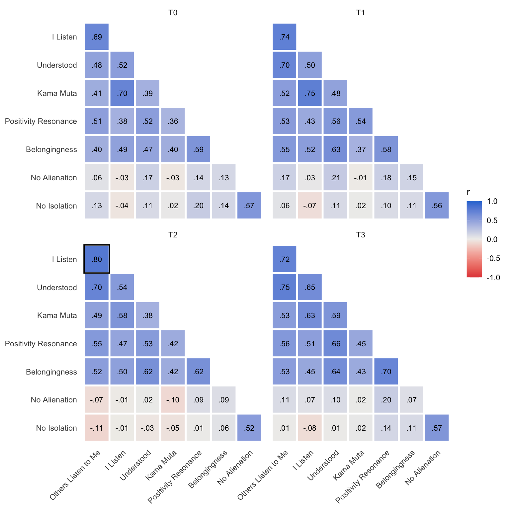
Six constructs form one group: at T0 they correlate between .36 and .70, most closely I Listen and Kama Muta. No Alienation and No Isolation, the two scales made only of reverse-keyed items, go together (r = .57 at T0) but hardly with the other six (at most .21 at any wave).
Next → Step 4, whether each pair of constructs is distinct.
Step 4 · Discriminant validity all persons
Are the constructs distinct? At each wave, the number of pairs, the highest latent correlation and the number of pairs that are not distinct:
h1_r |>
summarise(pairs = n(),
highest_r = max(abs(r)),
not_distinct = sum(ci_high >= .90),
.by = wave) |>
mutate(highest_r = round(highest_r, 2))| wave | pairs | highest_r | not_distinct |
|---|---|---|---|
| T0 | 28 | 0.70 | 0 |
| T1 | 28 | 0.75 | 0 |
| T2 | 28 | 0.80 | 1 |
| T3 | 28 | 0.75 | 0 |
The closest pairs at each wave:
h1_r |>
slice_max(abs(r), n = 3, by = wave) |>
mutate(across(c(r, ci_low, ci_high), \(x) round(x, 3)))| wave | pair | r | ci_low | ci_high |
|---|---|---|---|---|
| T0 | ListenSelf ~~ KamaMuta | 0.705 | 0.570 | 0.840 |
| T0 | ListenOther ~~ ListenSelf | 0.690 | 0.542 | 0.837 |
| T0 | Resonance ~~ Belongingness | 0.585 | 0.488 | 0.682 |
| T1 | ListenSelf ~~ KamaMuta | 0.751 | 0.619 | 0.884 |
| T1 | ListenOther ~~ ListenSelf | 0.740 | 0.615 | 0.865 |
| T1 | ListenOther ~~ Understood | 0.698 | 0.585 | 0.811 |
| T2 | ListenOther ~~ ListenSelf | 0.799 | 0.697 | 0.902 |
| T2 | ListenOther ~~ Understood | 0.703 | 0.584 | 0.822 |
| T2 | Resonance ~~ Belongingness | 0.619 | 0.511 | 0.727 |
| T3 | ListenOther ~~ Understood | 0.745 | 0.610 | 0.880 |
| T3 | ListenOther ~~ ListenSelf | 0.724 | 0.561 | 0.886 |
| T3 | Resonance ~~ Belongingness | 0.697 | 0.602 | 0.791 |
Every pair is distinct at T0, T1 and T3. At T2, Others Listen to Me and I Listen come closest (r = .80), and the upper bound of their interval reaches .90 by a hair (.902): the only pair of the block that is not distinct at any wave (framed in the heat map of Step 3).
Next → Steps 5 and 6, the block over the waves.
Over the waves · Steps 5 and 6
Step 5 · Adjacent waves all persons
How is the block written over two waves? The lines of one construct, Belongingness, in the scalar model for T0 and T1:
h1_two_waves <- block_long_model(blocks$H1, "scalar", over = c("T0", "T1"))
h1_two_waves |>
str_split_1("\n") |>
str_subset("^Belongingness") |>
cat(sep = "\n")Belongingness_T0 =~ 1*Belongingness1_T0 + l_Belongingness2*Belongingness2_T0 + l_Belongingness3*Belongingness3_T0
Belongingness_T1 =~ 1*Belongingness1_T1 + l_Belongingness2*Belongingness2_T1 + l_Belongingness3*Belongingness3_T1
Belongingness1_T0 ~ t_Belongingness1*1
Belongingness1_T1 ~ t_Belongingness1*1
Belongingness2_T0 ~ t_Belongingness2*1
Belongingness2_T1 ~ t_Belongingness2*1
Belongingness3_T0 ~ t_Belongingness3*1
Belongingness3_T1 ~ t_Belongingness3*1
Belongingness_T0 ~ 0*1
Belongingness_T1 ~ 1
Belongingness1_T0 ~~ Belongingness1_T1
Belongingness2_T0 ~~ Belongingness2_T1
Belongingness3_T0 ~~ Belongingness3_T1Each construct has one factor per wave. The labels l_ hold its loadings and t_ its intercepts equal over the two waves, its latent mean is 0 at T0 and free at T1, and each item’s residual correlates with itself across the waves. The metric model leaves the intercepts free and keeps both latent means at 0; the configural model also leaves out the loading labels. The whole scalar model has 103 lines.
Is each model possible? The configural, metric and scalar models of the three windows, with checks 1 to 6:
h1_adjacent <- adjacent |>
filter(block == "H1") |>
with_checks()
checks_table(h1_adjacent, window, level)| window | level | estimation | variances | correlations | residuals | factors | standard errors | possible |
|---|---|---|---|---|---|---|---|---|
| T0-T1 | configural | ✓ | ✓ | ✓ | ✓ | ✓ | ✓ | ✓ |
| T0-T1 | metric | ✓ | ✓ | ✓ | ✓ | ✓ | ✓ | ✓ |
| T0-T1 | scalar | ✓ | ✓ | ✓ | ✓ | ✓ | ✓ | ✓ |
| T1-T2 | configural | ✓ | ✓ | ✓ | ✓ | ✓ | ✓ | ✓ |
| T1-T2 | metric | ✓ | ✓ | ✓ | ✓ | ✓ | ✓ | ✓ |
| T1-T2 | scalar | ✓ | ✓ | ✓ | ✓ | ✓ | ✓ | ✓ |
| T2-T3 | configural | ✓ | ✓ | ✓ | ✓ | ✓ | ✓ | ✓ |
| T2-T3 | metric | ✓ | ✓ | ✓ | ✓ | ✓ | ✓ | ✓ |
| T2-T3 | scalar | ✓ | ✓ | ✓ | ✓ | ✓ | ✓ | ✓ |
plot_eigenvalues(h1_adjacent, str_c(window, " ", level))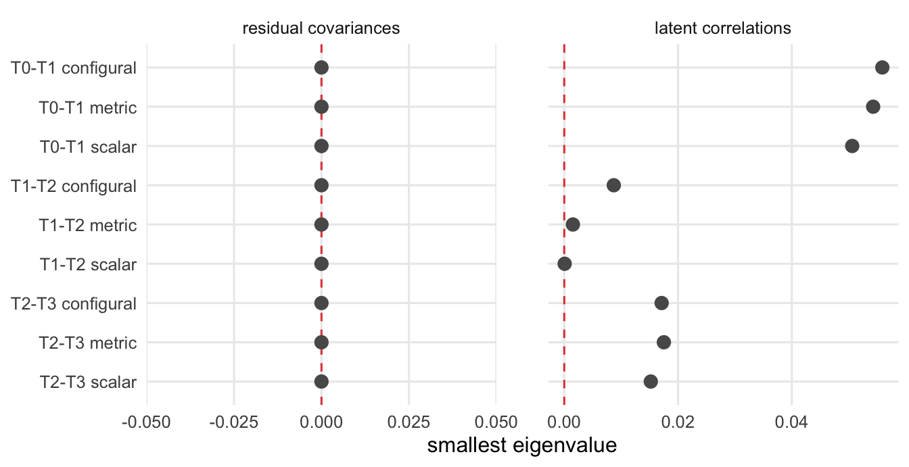
All nine models are possible. As at each wave, the residual covariances sit exactly on their boundary because of Understood. Over T1 and T2 the latent correlations come close to it as well (smallest eigenvalue down to 0.0001 in the scalar model), but stay above it.
Does the block stay invariant from one wave to the next? Each window from the configural to the scalar model, every model read only while the models before it are possible and pass:
h1_steps <- h1_adjacent |>
unnest(indices) |>
step_verdicts()
fit_table(h1_steps)| window | level | chisq | df | CFI | RMSEA | delta_CFI | delta_RMSEA | verdict |
|---|---|---|---|---|---|---|---|---|
| T0-T1 | configural | 1312.376 | 759 | 0.930 | 0.051 | holds | ||
| T0-T1 | metric | 1330.090 | 773 | 0.929 | 0.051 | -0.001 | 0.000 | holds |
| T0-T1 | scalar | 1358.949 | 787 | 0.927 | 0.051 | -0.002 | 0.000 | holds |
| T1-T2 | configural | 1277.451 | 759 | 0.938 | 0.050 | holds | ||
| T1-T2 | metric | 1300.799 | 773 | 0.936 | 0.050 | -0.002 | 0.000 | holds |
| T1-T2 | scalar | 1320.785 | 787 | 0.936 | 0.050 | 0.000 | 0.000 | holds |
| T2-T3 | configural | 1350.833 | 759 | 0.938 | 0.050 | holds | ||
| T2-T3 | metric | 1356.622 | 773 | 0.939 | 0.049 | 0.001 | -0.001 | holds |
| T2-T3 | scalar | 1377.063 | 787 | 0.939 | 0.049 | 0.000 | 0.000 | holds |
The decisions at a glance: one row per window, one tile per model:
plot_chain(h1_steps)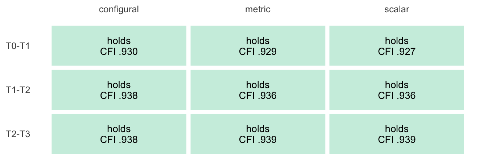
Holding the loadings and the intercepts equal over two adjacent waves costs at most .002 in CFI, so every metric and every scalar step holds. The configural model fits in all three windows (CFI .930 to .938): from one wave to the next, the block is scalar invariant.
Next → Step 6, the block over all four waves at once.
Step 6 · All four waves all persons
Does the block stay invariant over the whole year? The robust corrections of MLR break down for models of this size (the matrix they invert is singular for Well-being), so the four-wave models are fitted with standard maximum likelihood, again with full-information handling of missing answers.
What is the fit measured against? χ², CFI and RMSEA compare a model with the saturated model, which estimates every mean and covariance of the observed variables. With missing answers, the saturated model comes from the EM algorithm. Its log-likelihood after the default 500 and after 20,000 EM iterations, whether the algorithm converged, and the smallest eigenvalue of its covariance matrix:
h1_saturated <- saturated |> filter(block == "H1")
h1_saturated |>
select(-block) |>
mutate(logl = round(logl, 1),
smallest_eigen = as.character(signif(smallest_eigen, 2)))| iterations | variables | logl | converged | smallest_eigen |
|---|---|---|---|---|
| 500 | 88 | -41667.7 | FALSE | 0.027 |
| 20000 | 88 | -41667.7 | TRUE | 0.027 |
Within the default 500 iterations the algorithm does not converge. For this block it hardly matters: 20,000 iterations raise the log-likelihood by 0.003, and the saturated covariance matrix is well away from singular. For Well-being the iterations matter a great deal (Step 6 there), so the four-wave models of all three blocks use 20,000.
Is each four-wave model possible? The configural, metric and scalar models over all four waves, with checks 1 to 6:
h1_four <- four_waves |>
filter(block == "H1") |>
mutate(window = "T0-T3") |>
with_checks() |>
unnest(indices) |>
step_verdicts()
checks_table(h1_four, level)| level | estimation | variances | correlations | residuals | factors | standard errors | possible |
|---|---|---|---|---|---|---|---|
| configural | ✓ | ✓ | ✗ | ✗ | ✗ | ✓ | ✗ |
| metric | ✓ | ✓ | ✗ | ✗ | ✗ | ✓ | ✗ |
| scalar | ✓ | ✓ | ✗ | ✗ | ✗ | ✓ | ✗ |
plot_eigenvalues(h1_four, level)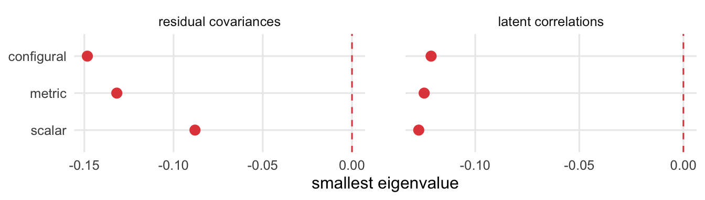
None of the three is possible: both the latent correlations and the residual covariances have a negative eigenvalue (down to -.127 and -.148), and in each model a correlation lies beyond 1 (up to 1.86). The step stops, and the fit of the four-wave models is not read. Over the year, the invariance of the block rests on the chain of adjacent windows (Step 5), whose metric and scalar steps all hold.
Next → Step 7, what follows.
What follows · Step 7
Step 7 · What follows
Where does the block go from here? Its eight constructs are distinct before the training and stay so, apart from one pair at T2 that touches the bound. They enter Chapters 9 to 11 as separate outcomes, and the composite of the block (Chapters 5 and 12) pools constructs that are empirically different. From one wave to the next the block is scalar invariant, which supports the equal loadings of the latent H1 block in the mediation models of Chapter 12. Over all four waves at once no model of the block is possible; there the invariance of each construct rests on its own model (Chapter 7).
Cognitive complexity (H2)
Its path through the steps. One row per decision below; every step uses all persons at the waves it names all persons:
| Step | Question | Result | Next |
|---|---|---|---|
| 2 | Possible at each wave? | yes, at all four | fit |
| 2 | Fits at each wave? | yes, at all four | correlations |
| 4 | Constructs distinct? | yes, at every wave | over the waves |
| 5 | Adjacent waves possible and invariant? | T0–T1: metric not possible, stops; T1–T2: scalar; T2–T3: configural does not fit, stops | all four waves |
| 6 | All four waves possible? | no: stops | what follows |
| 7 | What follows | distinct; scalar during maintenance only | Chapters 9 to 12 |
At each wave · Steps 1 to 4
Step 1 · The model all persons
Which constructs enter the block? Five, each with the items it keeps in Chapter 6 (by number):
scales |>
filter(block == "H2") |>
transmute(construct = scale, label,
items = map_chr(scale, \(s) block_items[[s]] |>
str_remove(s) |>
str_flatten_comma()))| construct | label | items |
|---|---|---|
| Rogerian | Rogerian Schema | 1, 3, 4, 5 |
| ParadoxMindset | Paradox Mindset | 2, 3, 4, 5, 6, 7, 8, 9 |
| IntellectualHumility | Intellectual Humility | 1, 3, 4, 5, 6 |
| ToleranceDiversity | Tolerance Diversity | 2, 3, 4, 5 |
| womenAttitude | Women Attitude | 4, 5, 8, 9 |
How is the block written? At one wave, in full:
block_wave_model(blocks$H2) |> cat("\n")Rogerian =~ 1*Rogerian1 + Rogerian3 + Rogerian4 + Rogerian5
ParadoxMindset =~ 1*ParadoxMindset2 + ParadoxMindset3 + ParadoxMindset4 + ParadoxMindset5 + ParadoxMindset6 + ParadoxMindset7 + ParadoxMindset8 + ParadoxMindset9
IntellectualHumility =~ 1*IntellectualHumility1 + IntellectualHumility3 + IntellectualHumility4 + IntellectualHumility5 + IntellectualHumility6
ToleranceDiversity =~ 1*ToleranceDiversity2 + ToleranceDiversity3 + ToleranceDiversity4 + ToleranceDiversity5
womenAttitude =~ 1*womenAttitude4 + womenAttitude5 + womenAttitude8 + womenAttitude9
ParadoxMindset4 ~~ ParadoxMindset5
ParadoxMindset2 ~~ ParadoxMindset7
womenAttitude4 ~~ womenAttitude5 One line per construct, with its first item as the marker; the five factors correlate freely. The last three lines are the residual covariances of Paradox Mindset and Women Attitude (Chapter 6). The model holds 25 items.
Next → Step 2, the checks of the model at each wave and its fit.
Step 2 · The checks at each wave all persons
Is the solution possible at each wave? Checks 1 to 6 of Chapter 7, as the script stored them for the model at each wave:
h2_waves <- per_wave |>
filter(block == "H2") |>
with_checks()
checks_table(h2_waves, wave)| wave | estimation | variances | correlations | residuals | factors | standard errors | possible |
|---|---|---|---|---|---|---|---|
| T0 | ✓ | ✓ | ✓ | ✓ | ✓ | ✓ | ✓ |
| T1 | ✓ | ✓ | ✓ | ✓ | ✓ | ✓ | ✓ |
| T2 | ✓ | ✓ | ✓ | ✓ | ✓ | ✓ | ✓ |
| T3 | ✓ | ✓ | ✓ | ✓ | ✓ | ✓ | ✓ |
How far are the two matrices from the boundary? The smallest eigenvalue of the residual covariances and of the latent correlations at each wave:
plot_eigenvalues(h2_waves, wave)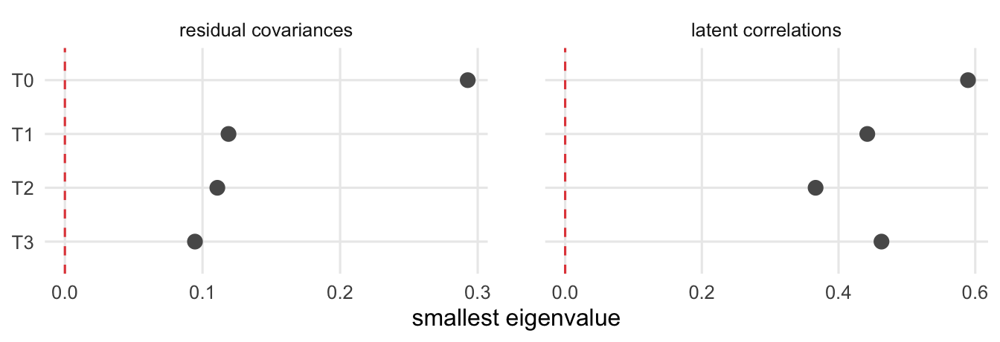
The solution is possible at all four waves, and both matrices stay well clear of the boundary: the smallest eigenvalue of the residual covariances is .095 or more, that of the latent correlations .366 or more.
Does the block fit at each wave? The fit, the number of residual covariances and loadings with an MI of 20 or more (large_mi), and whether the model fits (fits, a robust CFI of at least .90):
h2_fit <- h2_waves |>
filter(possible) |>
transmute(wave, indices, large_mi = map_int(mi, nrow)) |>
unnest(indices) |>
mutate(fits = CFI >= .90)
h2_fit |> mutate(across(where(is.double), \(x) round(x, 3)))| wave | chisq | df | CFI | RMSEA | SRMR | large_mi | fits |
|---|---|---|---|---|---|---|---|
| T0 | 433.416 | 262 | 0.943 | 0.046 | 0.052 | 0 | TRUE |
| T1 | 455.540 | 262 | 0.950 | 0.045 | 0.051 | 4 | TRUE |
| T2 | 456.292 | 262 | 0.931 | 0.054 | 0.061 | 5 | TRUE |
| T3 | 583.218 | 262 | 0.905 | 0.063 | 0.061 | 4 | TRUE |
Where does it strain? The three largest MIs at each wave:
h2_waves |>
filter(possible) |>
select(wave, mi) |>
unnest(mi) |>
slice_max(mi, n = 3, by = wave) |>
select(wave, lhs, op, rhs, mi, epc = sepc.all) |>
mutate(across(where(is.double), \(x) round(x, 3)))| wave | lhs | op | rhs | mi | epc |
|---|---|---|---|---|---|
| T1 | IntellectualHumility4 | ~~ | womenAttitude5 | 25.887 | 0.286 |
| T1 | ParadoxMindset9 | ~~ | womenAttitude5 | 23.236 | 0.261 |
| T1 | ParadoxMindset8 | ~~ | ParadoxMindset9 | 21.653 | 0.326 |
| T2 | Rogerian1 | ~~ | Rogerian4 | 39.317 | -0.586 |
| T2 | Rogerian3 | ~~ | Rogerian5 | 38.331 | -0.659 |
| T2 | Rogerian1 | ~~ | Rogerian5 | 30.985 | 0.496 |
| T3 | Rogerian4 | ~~ | Rogerian5 | 76.962 | 1.346 |
| T3 | Rogerian1 | ~~ | Rogerian3 | 65.277 | 0.784 |
| T3 | Rogerian3 | ~~ | Rogerian5 | 40.897 | -0.681 |
The block fits acceptably at every wave, least well at T3 (CFI .905, against .943 at T0). At T0 no MI reaches 20. At T2 and T3 the three largest all join items of Rogerian Schema: the strain that Chapter 6 finds in the model of this construct alone at the same waves.
Next → Step 3, how closely the constructs go together.
Step 3 · The latent correlations all persons
How closely do the constructs go together? The latent correlations at each wave whose model is possible and fits (Step 2), here all four:
h2_r <- h2_waves |>
filter(wave %in% h2_fit$wave[h2_fit$fits]) |>
select(wave, r) |>
unnest(r)h2_r |>
plot_latent_r(blocks$H2)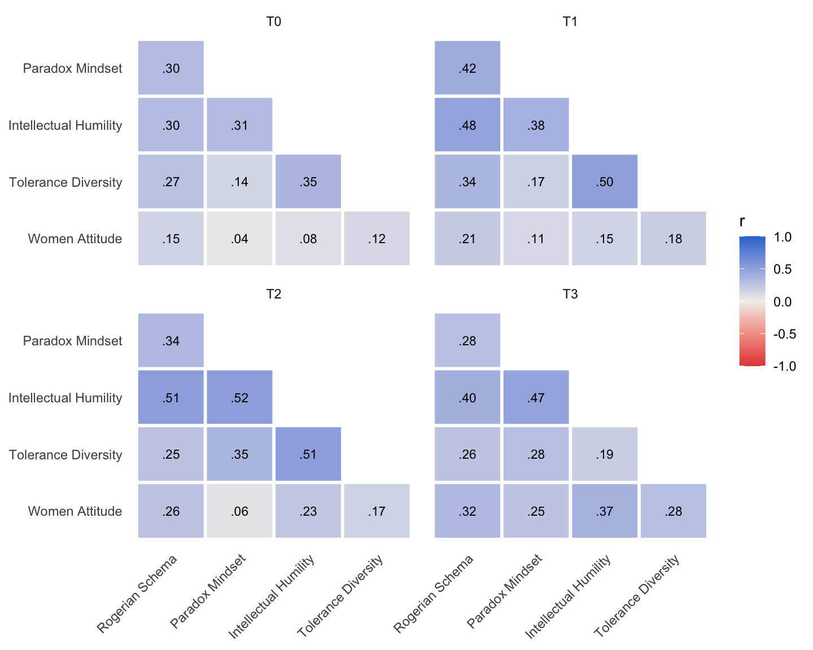
The five constructs correlate weakly to moderately: from .04 to .35 at T0, and at most .52 at any wave. Intellectual Humility goes most with the others; it takes part in the closest pair at every wave.
Next → Step 4, whether each pair of constructs is distinct.
Step 4 · Discriminant validity all persons
Are the constructs distinct? At each wave, the number of pairs, the highest latent correlation and the number of pairs that are not distinct:
h2_r |>
summarise(pairs = n(),
highest_r = max(abs(r)),
not_distinct = sum(ci_high >= .90),
.by = wave) |>
mutate(highest_r = round(highest_r, 2))| wave | pairs | highest_r | not_distinct |
|---|---|---|---|
| T0 | 10 | 0.35 | 0 |
| T1 | 10 | 0.50 | 0 |
| T2 | 10 | 0.52 | 0 |
| T3 | 10 | 0.47 | 0 |
The closest pairs at each wave:
h2_r |>
slice_max(abs(r), n = 3, by = wave) |>
mutate(across(c(r, ci_low, ci_high), \(x) round(x, 3)))| wave | pair | r | ci_low | ci_high |
|---|---|---|---|---|
| T0 | IntellectualHumility ~~ ToleranceDiversity | 0.348 | 0.206 | 0.490 |
| T0 | ParadoxMindset ~~ IntellectualHumility | 0.313 | 0.189 | 0.437 |
| T0 | Rogerian ~~ IntellectualHumility | 0.301 | 0.152 | 0.450 |
| T1 | IntellectualHumility ~~ ToleranceDiversity | 0.496 | 0.336 | 0.657 |
| T1 | Rogerian ~~ IntellectualHumility | 0.477 | 0.295 | 0.660 |
| T1 | Rogerian ~~ ParadoxMindset | 0.418 | 0.259 | 0.576 |
| T2 | ParadoxMindset ~~ IntellectualHumility | 0.515 | 0.394 | 0.636 |
| T2 | IntellectualHumility ~~ ToleranceDiversity | 0.514 | 0.360 | 0.668 |
| T2 | Rogerian ~~ IntellectualHumility | 0.513 | 0.387 | 0.639 |
| T3 | ParadoxMindset ~~ IntellectualHumility | 0.472 | 0.318 | 0.625 |
| T3 | Rogerian ~~ IntellectualHumility | 0.396 | 0.249 | 0.542 |
| T3 | IntellectualHumility ~~ womenAttitude | 0.372 | 0.167 | 0.577 |
Every pair is distinct at every wave, by a wide margin: the highest upper bound of any interval is .67.
Next → Steps 5 and 6, the block over the waves.
Over the waves · Steps 5 and 6
Step 5 · Adjacent waves all persons
How is the block written over two waves? The lines of one construct, Women Attitude, in the scalar model for T0 and T1:
h2_two_waves <- block_long_model(blocks$H2, "scalar", over = c("T0", "T1"))
h2_two_waves |>
str_split_1("\n") |>
str_subset("^womenAttitude") |>
cat(sep = "\n")womenAttitude_T0 =~ 1*womenAttitude4_T0 + l_womenAttitude2*womenAttitude5_T0 + l_womenAttitude3*womenAttitude8_T0 + l_womenAttitude4*womenAttitude9_T0
womenAttitude_T1 =~ 1*womenAttitude4_T1 + l_womenAttitude2*womenAttitude5_T1 + l_womenAttitude3*womenAttitude8_T1 + l_womenAttitude4*womenAttitude9_T1
womenAttitude4_T0 ~ t_womenAttitude1*1
womenAttitude4_T1 ~ t_womenAttitude1*1
womenAttitude5_T0 ~ t_womenAttitude2*1
womenAttitude5_T1 ~ t_womenAttitude2*1
womenAttitude8_T0 ~ t_womenAttitude3*1
womenAttitude8_T1 ~ t_womenAttitude3*1
womenAttitude9_T0 ~ t_womenAttitude4*1
womenAttitude9_T1 ~ t_womenAttitude4*1
womenAttitude_T0 ~ 0*1
womenAttitude_T1 ~ 1
womenAttitude4_T0 ~~ womenAttitude4_T1
womenAttitude5_T0 ~~ womenAttitude5_T1
womenAttitude8_T0 ~~ womenAttitude8_T1
womenAttitude9_T0 ~~ womenAttitude9_T1
womenAttitude4_T0 ~~ womenAttitude5_T0
womenAttitude4_T1 ~~ womenAttitude5_T1As in Listening and Togetherness, with one addition: the residual covariance of items 4 and 5 is repeated at each wave (the last two lines). The whole scalar model has 101 lines.
Is each model possible? The configural, metric and scalar models of the three windows, with checks 1 to 6:
h2_adjacent <- adjacent |>
filter(block == "H2") |>
with_checks()
checks_table(h2_adjacent, window, level)| window | level | estimation | variances | correlations | residuals | factors | standard errors | possible |
|---|---|---|---|---|---|---|---|---|
| T0-T1 | configural | ✓ | ✓ | ✓ | ✓ | ✓ | ✓ | ✓ |
| T0-T1 | metric | ✓ | ✓ | ✗ | ✗ | ✓ | ✓ | ✗ |
| T0-T1 | scalar | ✓ | ✓ | ✓ | ✓ | ✓ | ✓ | ✓ |
| T1-T2 | configural | ✓ | ✓ | ✓ | ✓ | ✓ | ✓ | ✓ |
| T1-T2 | metric | ✓ | ✓ | ✓ | ✓ | ✓ | ✓ | ✓ |
| T1-T2 | scalar | ✓ | ✓ | ✓ | ✓ | ✓ | ✓ | ✓ |
| T2-T3 | configural | ✓ | ✓ | ✓ | ✓ | ✓ | ✓ | ✓ |
| T2-T3 | metric | ✓ | ✓ | ✓ | ✓ | ✓ | ✓ | ✓ |
| T2-T3 | scalar | ✓ | ✓ | ✓ | ✓ | ✓ | ✓ | ✓ |
plot_eigenvalues(h2_adjacent, str_c(window, " ", level))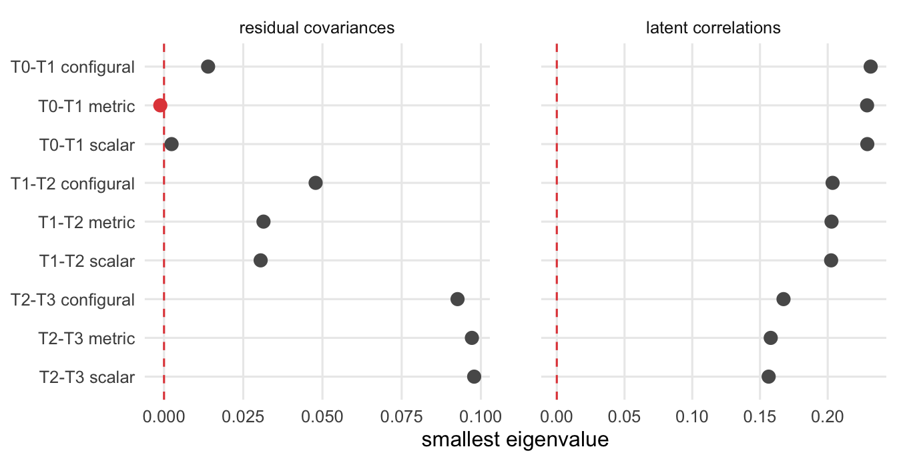
Eight of the nine models are possible. The metric model for T0–T1 is not: a correlation lies beyond 1 (check 3, 1.006), and the residual covariances miss positive definiteness by a hair (check 4, smallest eigenvalue -0.0012). The configural and the scalar model of the same window pass. The latent correlations stay well clear of the boundary in every model.
Which correlation lies beyond 1? The metric model for T0–T1 is fitted again here, and its four largest correlations are listed with their 95 % intervals:
h2_metric_fit <- df_wide |>
cfa(model = block_long_model(blocks$H2, "metric", over = c("T0", "T1")),
data = _, estimator = "MLR", missing = "fiml")
h2_metric_r <- standardizedSolution(h2_metric_fit) |>
filter(op == "~~", lhs != rhs) |>
slice_max(abs(est.std), n = 4) |>
select(lhs, rhs, r = est.std, ci.lower, ci.upper)
h2_metric_r |>
mutate(across(where(is.double), \(x) round(x, 3)))| lhs | rhs | r | ci.lower | ci.upper |
|---|---|---|---|---|
| womenAttitude8_T0 | womenAttitude8_T1 | 1.006 | 0.370 | 1.641 |
| Rogerian_T0 | Rogerian_T1 | 0.661 | 0.520 | 0.803 |
| ParadoxMindset_T0 | ParadoxMindset_T1 | 0.634 | 0.528 | 0.741 |
| ToleranceDiversity_T0 | ToleranceDiversity_T1 | 0.556 | 0.351 | 0.762 |
Why does it cross the bound? The residual variances of that item at both waves, with their z-tests:
h2_item8 <- parameterEstimates(h2_metric_fit) |>
filter(op == "~~", lhs == rhs, str_starts(lhs, "womenAttitude8_")) |>
select(variable = lhs, est, se, z, pvalue)
h2_item8 |>
mutate(across(where(is.double), \(x) round(x, 3)))| variable | est | se | z | pvalue |
|---|---|---|---|---|
| womenAttitude8_T0 | 0.311 | 0.150 | 2.077 | 0.038 |
| womenAttitude8_T1 | 0.161 | 0.134 | 1.202 | 0.229 |
It is one item. The residual of Women Attitude item 8 in January correlates with itself in March at 1.006, beyond 1; its interval reaches back into the possible range (from .370). Its residual variance in March is small and does not differ from 0 (z = 1.20), so a covariance of ordinary size crosses the bound. The same correlation leaves the residual covariances without a proper matrix: checks 3 and 4 fail for one reason. It is the estimate that makes Women Attitude’s own configural model not possible in Chapter 7 (7.4, Step 2). There the stop rule adjusts it; the block model is not adjusted (8.1).
Does the block stay invariant from one wave to the next? Each window from the configural to the scalar model, every model read only while the models before it are possible and pass:
h2_steps <- h2_adjacent |>
unnest(indices) |>
step_verdicts()
fit_table(h2_steps)| window | level | chisq | df | CFI | RMSEA | delta_CFI | delta_RMSEA | verdict |
|---|---|---|---|---|---|---|---|---|
| T0-T1 | configural | 1765.421 | 1099 | 0.912 | 0.044 | holds | ||
| T0-T1 | metric | not possible | ||||||
| T0-T1 | scalar | not read | ||||||
| T1-T2 | configural | 1861.687 | 1099 | 0.973 | 0.024 | holds | ||
| T1-T2 | metric | 1878.068 | 1119 | 0.971 | 0.025 | -0.002 | 0.001 | holds |
| T1-T2 | scalar | 1896.826 | 1139 | 0.971 | 0.024 | 0.001 | -0.001 | holds |
| T2-T3 | configural | 2112.405 | 1099 | 0.835 | 0.064 | does not fit | ||
| T2-T3 | metric | not read | ||||||
| T2-T3 | scalar | not read |
The decisions at a glance: one row per window, one tile per model:
plot_chain(h2_steps)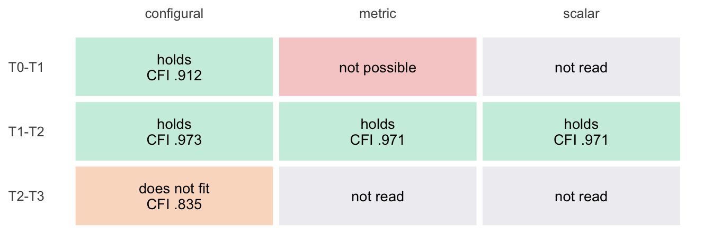
The rule takes each window as far as its models allow. While the experimental group trains (T0–T1), the configural model fits (CFI .912), but the metric model is not possible: the window stops there, and its metric and scalar steps are not read. The block model is not adjusted to make it possible (8.1); whether the loadings of each construct hold over these waves is the question of Chapter 7. During maintenance (T1–T2) the configural model fits well (.973), and the equal loadings and intercepts cost at most .002 in CFI: the block is scalar invariant. While the control group trains (T2–T3), the configural model does not fit (.835): over these two waves the block lacks even configural invariance, and its further steps are not read.
Next → Step 6, the block over all four waves at once.
Step 6 · All four waves all persons
Does the saturated model converge? As in Listening and Togetherness, with standard maximum likelihood over all four waves:
h2_saturated <- saturated |> filter(block == "H2")
h2_saturated |>
select(-block) |>
mutate(logl = round(logl, 1),
smallest_eigen = as.character(signif(smallest_eigen, 2)))| iterations | variables | logl | converged | smallest_eigen |
|---|---|---|---|---|
| 500 | 100 | -45452.7 | FALSE | 0.0028 |
| 20000 | 100 | -45450.1 | TRUE | 0.0026 |
Not within the default 500 iterations; 20,000 raise the log-likelihood by 2.6, which would change the χ² of a four-wave model by about 5: for this block the iterations matter little. The saturated covariance matrix stays clear of singularity (smallest eigenvalue 0.0026).
Is each four-wave model possible? The configural, metric and scalar models over all four waves, with checks 1 to 6:
h2_four <- four_waves |>
filter(block == "H2") |>
mutate(window = "T0-T3") |>
with_checks() |>
unnest(indices) |>
step_verdicts()
checks_table(h2_four, level)| level | estimation | variances | correlations | residuals | factors | standard errors | possible |
|---|---|---|---|---|---|---|---|
| configural | ✓ | ✓ | ✓ | ✗ | ✓ | ✓ | ✗ |
| metric | ✓ | ✓ | ✓ | ✗ | ✓ | ✓ | ✗ |
| scalar | ✓ | ✓ | ✓ | ✗ | ✓ | ✓ | ✗ |
plot_eigenvalues(h2_four, level)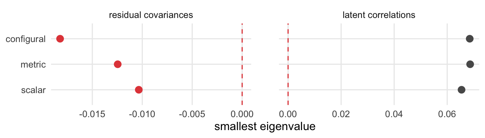
None of the three is possible: the residual covariances have a negative eigenvalue in each (down to -.018), while the latent correlations form a proper matrix. The step stops, and the fit of the four-wave models is not read.
Next → Step 7, what follows.
What follows · Step 7
Step 7 · What follows
Where does the block go from here? Its five constructs are clearly distinct at every wave; they enter Chapters 9 to 11 as separate outcomes, and the composite of the block (Chapters 5 and 12) pools constructs that are empirically different. Over adjacent waves the block is scalar invariant only during maintenance. While the experimental group trains, its metric model is not possible and the window stops at the configural level; while the control group trains, its structure does not hold, between the two waves at which the Rogerian items strain (Step 2). Over all four waves at once no model of the block is possible; whether each construct stays invariant rests on its own model (Chapter 7).
Well-being (H3)
Its path through the steps. One row per decision below; every step uses all persons at the waves it names all persons:
| Step | Question | Result | Next |
|---|---|---|---|
| 2 | Possible at each wave? | at T0, T1 and T3; at T2 not: stops | fit |
| 2 | Fits at each wave? | at T0 and T1; at T3 not: stops | correlations |
| 4 | Constructs distinct? | at T0; at T1 three pairs not | over the waves |
| 5 | Adjacent waves possible? | no, in no window: stops | all four waves |
| 6 | All four waves possible? | no: stops | what follows |
| 7 | What follows | distinct at T0 | Chapters 9 to 12 |
At each wave · Steps 1 to 4
Step 1 · The model all persons
Which constructs enter the block? Ten, each with the items it keeps in Chapter 6 (by number):
scales |>
filter(block == "H3") |>
transmute(construct = scale, label,
items = map_chr(scale, \(s) block_items[[s]] |>
str_remove(s) |>
str_flatten_comma()))| construct | label | items |
|---|---|---|
| Flourishing | Flourishing | 1, 2, 3, 4 |
| AutonomySatisfaction | Autonomy Satisfaction | 1, 2, 3, 4 |
| RelatednessSatisfaction | Relatedness Satisfaction | 1, 2, 3, 4 |
| CompetenceSatisfaction | Competence Satisfaction | 1, 2, 3, 4 |
| AutonomyNonFrustrated | Autonomy Non-Frustrated | 1, 2, 3, 4 |
| RelatednessNonFrustrated | Relatedness Non-Frustrated | 1, 2, 3, 4 |
| CompetenceNonFrustrated | Competence Non-Frustrated | 1, 2, 3, 4 |
| Empowerment | Empowerment | 1, 3, 4, 5 |
| Agency | Agency | 1, 2, 3 |
| IntellectualCapital | Intellectual Capital | 1, 2, 3 |
How is the block written? At one wave, in full:
block_wave_model(blocks$H3) |> cat("\n")Flourishing =~ 1*Flourishing1 + Flourishing2 + Flourishing3 + Flourishing4
AutonomySatisfaction =~ 1*AutonomySatisfaction1 + AutonomySatisfaction2 + AutonomySatisfaction3 + AutonomySatisfaction4
RelatednessSatisfaction =~ 1*RelatednessSatisfaction1 + RelatednessSatisfaction2 + RelatednessSatisfaction3 + RelatednessSatisfaction4
CompetenceSatisfaction =~ 1*CompetenceSatisfaction1 + CompetenceSatisfaction2 + CompetenceSatisfaction3 + CompetenceSatisfaction4
AutonomyNonFrustrated =~ 1*AutonomyNonFrustrated1 + AutonomyNonFrustrated2 + AutonomyNonFrustrated3 + AutonomyNonFrustrated4
RelatednessNonFrustrated =~ 1*RelatednessNonFrustrated1 + RelatednessNonFrustrated2 + RelatednessNonFrustrated3 + RelatednessNonFrustrated4
CompetenceNonFrustrated =~ 1*CompetenceNonFrustrated1 + CompetenceNonFrustrated2 + CompetenceNonFrustrated3 + CompetenceNonFrustrated4
Empowerment =~ 1*Empowerment1 + Empowerment3 + Empowerment4 + Empowerment5
Agency =~ 1*Agency1 + Agency2 + Agency3
IntellectualCapital =~ 1*IntellectualCapital1 + IntellectualCapital2 + IntellectualCapital3
Flourishing1 ~~ Flourishing2
Empowerment4 ~~ Empowerment5 One line per construct, with its first item as the marker; the ten factors correlate freely. The last two lines are the residual covariances of Flourishing and Empowerment (Chapter 6). With 38 items, this is the largest of the three blocks.
Next → Step 2, the checks of the model at each wave and its fit.
Step 2 · The checks at each wave all persons
Is the solution possible at each wave? Checks 1 to 6 of Chapter 7, as the script stored them for the model at each wave:
h3_waves <- per_wave |>
filter(block == "H3") |>
with_checks()
checks_table(h3_waves, wave)| wave | estimation | variances | correlations | residuals | factors | standard errors | possible |
|---|---|---|---|---|---|---|---|
| T0 | ✓ | ✓ | ✓ | ✓ | ✓ | ✓ | ✓ |
| T1 | ✓ | ✓ | ✓ | ✓ | ✓ | ✓ | ✓ |
| T2 | ✓ | ✓ | ✓ | ✓ | ✗ | ✓ | ✗ |
| T3 | ✓ | ✓ | ✓ | ✓ | ✓ | ✓ | ✓ |
How far are the two matrices from the boundary? The smallest eigenvalue of the residual covariances and of the latent correlations at each wave:
plot_eigenvalues(h3_waves, wave)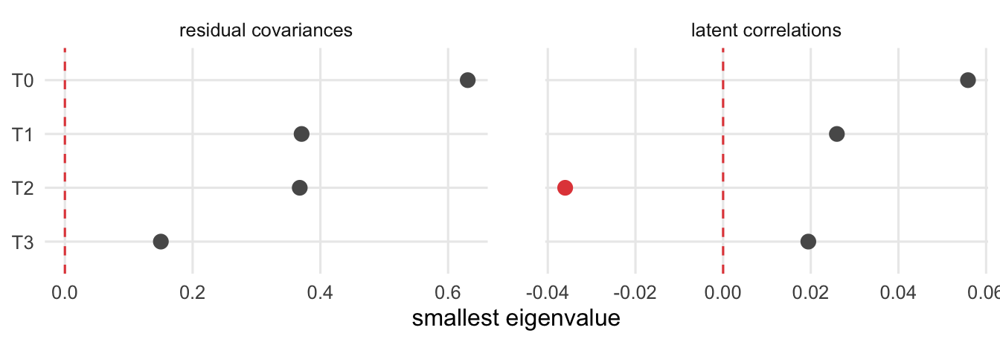
At T0, T1 and T3 the solution is possible. At T2 it is not: check 5 fails, the latent correlations have a negative eigenvalue (-.036). The other checks hold there; no variance is negative, and no single correlation lies beyond ±1 (the largest is .92).
Where does the matrix break? A negative eigenvalue means that one weighted sum of the ten factors would have a negative variance. The weights of that sum (the eigenvector of the smallest eigenvalue) show which constructs it is made of. The model at T2 is fitted again for this:
h3_t2_fit <- df |>
filter(Occasion == "T2") |>
select(all_of(h3_items)) |>
cfa(model = block_wave_model(blocks$H3), data = _, estimator = "MLR",
missing = "fiml.x")
h3_t2_latent <- cov2cor(lavInspect(h3_t2_fit, "cov.lv"))
h3_t2_vector <- eigen(h3_t2_latent, symmetric = TRUE)$vectors[, 10]
# the sign of an eigenvector is arbitrary: the largest weight is positive
h3_t2_weights <- tibble(
construct = rownames(h3_t2_latent),
weight = h3_t2_vector * sign(h3_t2_vector[which.max(abs(h3_t2_vector))])
)
scale_labels <- set_names(scales$label, scales$scale)
h3_t2_weights |>
mutate(construct = fct_reorder(scale_labels[construct], weight)) |>
ggplot(aes(weight, construct, fill = weight > 0)) +
geom_col(width = .6) +
geom_vline(xintercept = 0, colour = "grey40") +
scale_fill_manual(values = c(`TRUE` = "#e34948", `FALSE` = "#2a78d6"),
guide = "none") +
labs(x = "weight in the sum with negative variance", y = NULL) +
theme_minimal(base_size = 12) +
theme(panel.grid.minor = element_blank())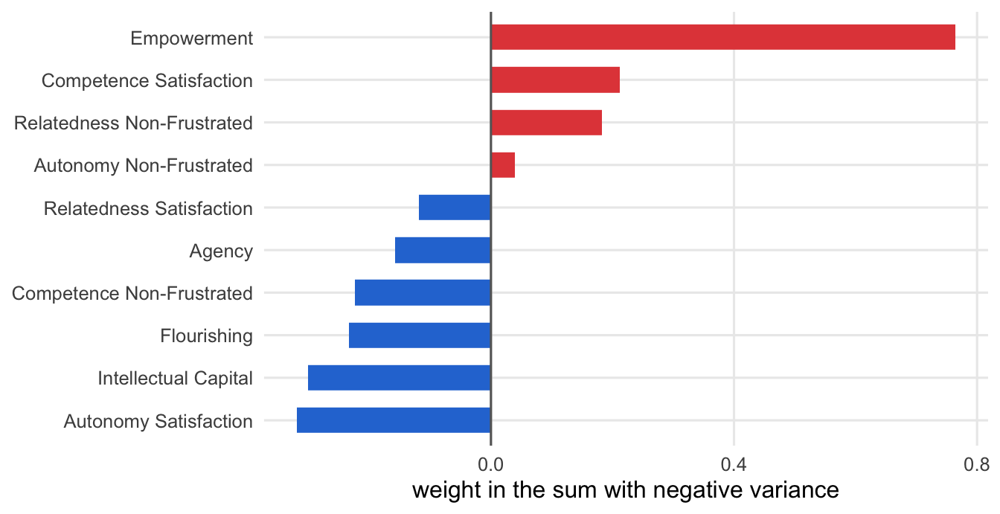
How much of Empowerment do the other nine factors explain? Its squared multiple correlation with them, from the latent correlations at T2:
h3_others <- setdiff(rownames(h3_t2_latent), "Empowerment")
h3_t2_r2 <- h3_t2_latent["Empowerment", h3_others] %*%
solve(h3_t2_latent[h3_others, h3_others]) %*%
h3_t2_latent[h3_others, "Empowerment"]
round(drop(h3_t2_r2), 3)[1] 1.127Empowerment carries by far the largest weight (.76), against Autonomy Satisfaction, Intellectual Capital and Flourishing, with which it correlates at .92, .86 and .83 at this wave. Taken together, the other nine factors explain 113 % of the variance of Empowerment: more than all of it. No single correlation is impossible, but the ten constructs overlap more than ten separate factors can. The model at T2 stops here: its fit, its latent correlations and its modification indices are not read.
Does the block fit at each wave whose solution is possible? The fit, the number of residual covariances and loadings with an MI of 20 or more (large_mi), and whether the model fits (fits, a robust CFI of at least .90):
h3_fit <- h3_waves |>
filter(possible) |>
transmute(wave, indices, large_mi = map_int(mi, nrow)) |>
unnest(indices) |>
mutate(fits = CFI >= .90)
h3_fit |> mutate(across(where(is.double), \(x) round(x, 3)))| wave | chisq | df | CFI | RMSEA | SRMR | large_mi | fits |
|---|---|---|---|---|---|---|---|
| T0 | 1043.322 | 618 | 0.913 | 0.047 | 0.056 | 8 | TRUE |
| T1 | 1011.182 | 618 | 0.919 | 0.046 | 0.053 | 5 | TRUE |
| T3 | 1189.960 | 618 | 0.839 | 0.065 | 0.073 | 8 | FALSE |
Where does it strain? The three largest MIs at each of these waves:
h3_waves |>
filter(possible) |>
select(wave, mi) |>
unnest(mi) |>
slice_max(mi, n = 3, by = wave) |>
select(wave, lhs, op, rhs, mi, epc = sepc.all) |>
mutate(across(where(is.double), \(x) round(x, 3)))| wave | lhs | op | rhs | mi | epc |
|---|---|---|---|---|---|
| T0 | Empowerment4 | ~~ | IntellectualCapital3 | 45.118 | 0.369 |
| T0 | Empowerment | =~ | RelatednessSatisfaction4 | 34.339 | 0.394 |
| T0 | RelatednessSatisfaction4 | ~~ | RelatednessNonFrustrated4 | 28.148 | 0.313 |
| T1 | Empowerment4 | ~~ | IntellectualCapital3 | 66.775 | 0.504 |
| T1 | RelatednessSatisfaction1 | ~~ | RelatednessNonFrustrated2 | 24.587 | 0.333 |
| T1 | RelatednessNonFrustrated4 | ~~ | CompetenceNonFrustrated4 | 22.842 | 0.328 |
| T3 | RelatednessSatisfaction2 | ~~ | RelatednessSatisfaction3 | 52.619 | 2.523 |
| T3 | Empowerment4 | ~~ | IntellectualCapital3 | 41.861 | 0.508 |
| T3 | CompetenceSatisfaction | =~ | Empowerment1 | 34.574 | 0.625 |
Of the three waves whose solution is possible, the block fits acceptably at T0 and T1 (CFI .913 and .919), but not at T3 (.839). A model that misses structure in the data can distort its latent correlations, so the model at T3 stops as well: Steps 3 and 4 read T0 and T1. One pair recurs among the largest MIs at all three waves: item 4 of Empowerment and item 3 of Intellectual Capital.
Next → Step 3, how closely the constructs go together.
Step 3 · The latent correlations all persons
How closely do the constructs go together? The latent correlations at each wave whose model is possible and fits (Step 2), here T0 and T1:
h3_r <- h3_waves |>
filter(wave %in% h3_fit$wave[h3_fit$fits]) |>
select(wave, r) |>
unnest(r)h3_r |>
plot_latent_r(blocks$H3)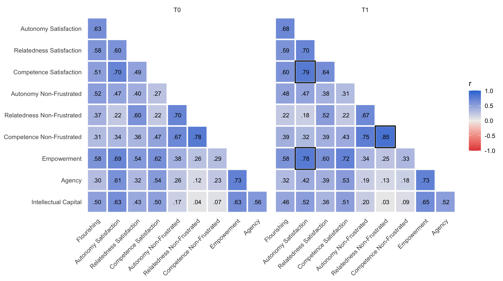
At T0 the correlations range from .04 to .78. The three non-frustration constructs, made only of reverse-keyed items, form the closest group (.67 to .78). At T1, after the experimental group’s training, the closest pairs are higher: Relatedness and Competence Non-Frustrated correlate at .85, Autonomy Satisfaction with Competence Satisfaction at .79 and with Empowerment at .78.
Next → Step 4, whether each pair of constructs is distinct.
Step 4 · Discriminant validity all persons
Are the constructs distinct? At T0 and T1, the number of pairs, the highest latent correlation and the number of pairs that are not distinct:
h3_distinct <- h3_r |>
summarise(pairs = n(),
highest_r = max(abs(r)),
not_distinct = sum(ci_high >= .90),
.by = wave)
h3_distinct |> mutate(highest_r = round(highest_r, 2))| wave | pairs | highest_r | not_distinct |
|---|---|---|---|
| T0 | 45 | 0.78 | 0 |
| T1 | 45 | 0.85 | 3 |
Which pairs are not distinct?
h3_r |>
filter(ci_high >= .90) |>
mutate(across(c(r, ci_low, ci_high), \(x) round(x, 3)))| wave | pair | r | ci_low | ci_high |
|---|---|---|---|---|
| T1 | AutonomySatisfaction ~~ CompetenceSatisfaction | 0.787 | 0.651 | 0.923 |
| T1 | AutonomySatisfaction ~~ Empowerment | 0.782 | 0.640 | 0.925 |
| T1 | RelatednessNonFrustrated ~~ CompetenceNonFrustrated | 0.855 | 0.764 | 0.946 |
At T0 all 45 pairs are distinct. At T1, 3 are not: the three closest pairs of Step 3, whose intervals reach up to .92 to .95 (framed in the heat map). At T2 the model is not possible and at T3 it does not fit (Step 2), so neither wave says whether the constructs stay distinct.
Next → Steps 5 and 6, the block over the waves.
Over the waves · Steps 5 and 6
Step 5 · Adjacent waves all persons
How is the block written over two waves? The lines of one construct, Agency, in the scalar model for T0 and T1:
h3_two_waves <- block_long_model(blocks$H3, "scalar", over = c("T0", "T1"))
h3_two_waves |>
str_split_1("\n") |>
str_subset("^Agency") |>
cat(sep = "\n")Agency_T0 =~ 1*Agency1_T0 + l_Agency2*Agency2_T0 + l_Agency3*Agency3_T0
Agency_T1 =~ 1*Agency1_T1 + l_Agency2*Agency2_T1 + l_Agency3*Agency3_T1
Agency1_T0 ~ t_Agency1*1
Agency1_T1 ~ t_Agency1*1
Agency2_T0 ~ t_Agency2*1
Agency2_T1 ~ t_Agency2*1
Agency3_T0 ~ t_Agency3*1
Agency3_T1 ~ t_Agency3*1
Agency_T0 ~ 0*1
Agency_T1 ~ 1
Agency1_T0 ~~ Agency1_T1
Agency2_T0 ~~ Agency2_T1
Agency3_T0 ~~ Agency3_T1As in the other blocks; the whole scalar model has 158 lines, for 20 factors.
Is each model possible? The configural, metric and scalar models of the three windows, with checks 1 to 6:
h3_adjacent <- adjacent |>
filter(block == "H3") |>
with_checks()
checks_table(h3_adjacent, window, level)| window | level | estimation | variances | correlations | residuals | factors | standard errors | possible |
|---|---|---|---|---|---|---|---|---|
| T0-T1 | configural | ✓ | ✓ | ✓ | ✓ | ✗ | ✓ | ✗ |
| T0-T1 | metric | ✓ | ✓ | ✓ | ✓ | ✗ | ✓ | ✗ |
| T0-T1 | scalar | ✓ | ✓ | ✓ | ✓ | ✗ | ✓ | ✗ |
| T1-T2 | configural | ✓ | ✓ | ✓ | ✓ | ✗ | ✓ | ✗ |
| T1-T2 | metric | ✓ | ✓ | ✓ | ✓ | ✗ | ✓ | ✗ |
| T1-T2 | scalar | ✓ | ✓ | ✓ | ✓ | ✗ | ✓ | ✗ |
| T2-T3 | configural | ✓ | ✓ | ✓ | ✓ | ✗ | ✓ | ✗ |
| T2-T3 | metric | ✓ | ✓ | ✓ | ✓ | ✗ | ✓ | ✗ |
| T2-T3 | scalar | ✓ | ✓ | ✓ | ✓ | ✗ | ✓ | ✗ |
plot_eigenvalues(h3_adjacent, str_c(window, " ", level))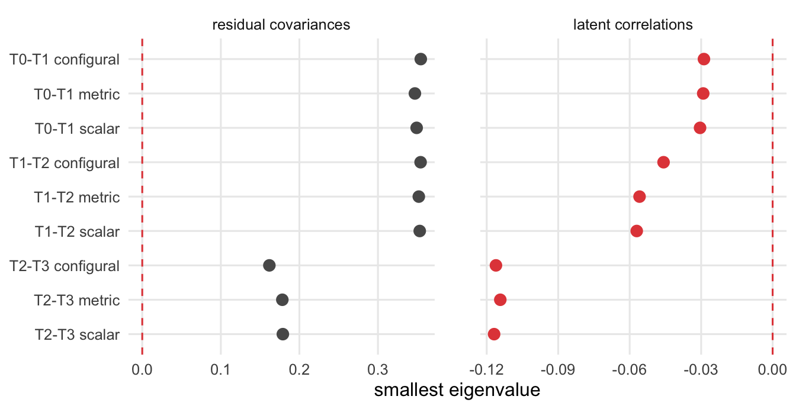
The decisions at a glance: one row per window, one tile per model:
h3_steps <- h3_adjacent |>
unnest(indices) |>
step_verdicts()
plot_chain(h3_steps)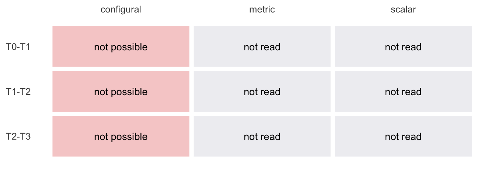
None of the nine models is possible. In every window the latent correlations of the 20 factors have a negative eigenvalue (from -.029 to -.117), as at T2 in Step 2; the residual covariances form a proper matrix throughout. Each window stops at its configural model, and the fit of these models is not read. Whether the constructs of Well-being stay the same from wave to wave rests on their own models (Chapter 7).
Next → Step 6, the block over all four waves at once.
Step 6 · All four waves all persons
Does the saturated model converge? As in the other blocks, with standard maximum likelihood over all four waves:
h3_saturated <- saturated |> filter(block == "H3")
h3_saturated |>
select(-block) |>
mutate(logl = round(logl, 1),
smallest_eigen = as.character(signif(smallest_eigen, 2)))| iterations | variables | logl | converged | smallest_eigen |
|---|---|---|---|---|
| 500 | 152 | -57371.2 | FALSE | 5.6e-07 |
| 20000 | 152 | -54257.3 | TRUE | 6.4e-07 |
Not within the default 500 iterations, and here it matters: 20,000 iterations raise the log-likelihood by 3,114, so with the default iterations the χ² of every four-wave Well-being model would be too small by 6,228 and its fit would look better than it is. This is why the four-wave models use 20,000 iterations. Even then the saturated covariance matrix is close to singular (smallest eigenvalue 6.4e-07): 451 persons, many of them with missing waves, barely determine the 11,628 covariances of 152 observed variables. Even with possible solutions, the absolute fit of the four-wave Well-being models would be fragile.
Is each four-wave model possible? The configural, metric and scalar models over all four waves, with checks 1 to 6:
h3_four <- four_waves |>
filter(block == "H3") |>
mutate(window = "T0-T3") |>
with_checks() |>
unnest(indices) |>
step_verdicts()
checks_table(h3_four, level)| level | estimation | variances | correlations | residuals | factors | standard errors | possible |
|---|---|---|---|---|---|---|---|
| configural | ✓ | ✓ | ✓ | ✓ | ✗ | ✓ | ✗ |
| metric | ✓ | ✓ | ✓ | ✓ | ✗ | ✓ | ✗ |
| scalar | ✓ | ✓ | ✓ | ✓ | ✗ | ✓ | ✗ |
plot_eigenvalues(h3_four, level)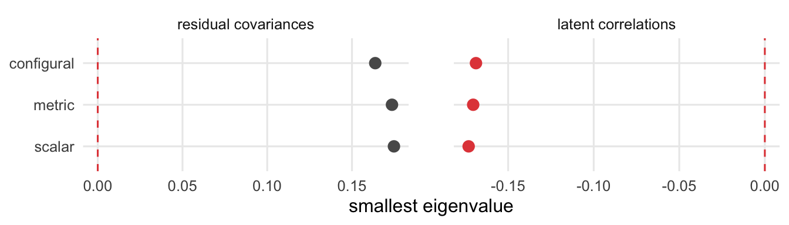
None of the three is possible: as over two waves, the latent correlations of the 40 factors have a negative eigenvalue (down to -.173). The step stops, and the fit of the four-wave models is not read.
Next → Step 7, what follows.
What follows · Step 7
Step 7 · What follows
Where does the block go from here? Before the training its ten constructs are distinct; they enter Chapters 9 to 11 as separate outcomes, and the composite of the block (Chapters 5 and 12) pools constructs that are empirically different at the start. At T1 three pairs come closer than the bound allows. At T2 the block model is not possible and at T3 it does not fit, so neither wave says whether the constructs stay distinct, and no model over several waves is possible. Whether the constructs stay invariant over the year rests on their own models (Chapter 7).
8.4 All blocks at a glance
How do the three blocks compare? Two tables, one row per block. At each wave: its constructs and items, the waves whose model is possible, the waves whose model also fits and the range of its CFI there, and the pairs that are not distinct at each wave that is read:
glance <- tribble(
~block, ~waves, ~fit, ~r, ~steps, ~four,
"H1", h1_waves, h1_fit, h1_r, h1_steps, h1_four,
"H2", h2_waves, h2_fit, h2_r, h2_steps, h2_four,
"H3", h3_waves, h3_fit, h3_r, h3_steps, h3_four
)
# the waves of a table, as "T0, T1, T3"
wave_list <- \(waves) str_flatten_comma(waves)
glance |>
transmute(block,
constructs = map_int(block, \(b) length(blocks[[b]])),
items = map_int(block, \(b) length(items_of(blocks[[b]]))),
possible = map_chr(waves, \(w) wave_list(w$wave[w$possible])),
fits = map_chr(fit, \(f) wave_list(f$wave[f$fits])),
CFI = map_chr(fit, \(f) str_c(apa(min(f$CFI[f$fits]), 3),
"–",
apa(max(f$CFI[f$fits]), 3))),
not_distinct = map_chr(r, \(pairs) pairs |>
summarise(n = sum(ci_high >= .90),
.by = wave) |>
transmute(str_c(wave, ": ", n)) |>
pull() |>
str_flatten_comma()))| block | constructs | items | possible | fits | CFI | not_distinct |
|---|---|---|---|---|---|---|
| H1 | 8 | 22 | T0, T1, T2, T3 | T0, T1, T2, T3 | .934–.965 | T0: 0, T1: 0, T2: 1, T3: 0 |
| H2 | 5 | 25 | T0, T1, T2, T3 | T0, T1, T2, T3 | .905–.950 | T0: 0, T1: 0, T2: 0, T3: 0 |
| H3 | 10 | 38 | T0, T1, T3 | T0, T1 | .913–.919 | T0: 0, T1: 3 |
Over the waves: how far each window of adjacent waves gets, and all four waves together (T0-T3), with the number of the block’s 16 models that are possible:
# all 16 models of each block (each table holds its block): at each wave,
# over adjacent waves and over all four waves
block_models <- glance |>
transmute(models = pmap(list(waves, steps, four), bind_rows)) |>
unnest(models)
block_models |>
filter(!is.na(level)) |>
summarise(result = window_result(level, verdict), .by = c(block, window)) |>
pivot_wider(names_from = window, values_from = result) |>
left_join(block_models |>
summarise(possible = str_c(sum(possible), " of ", n()),
.by = block),
by = "block")| block | T0-T1 | T1-T2 | T2-T3 | T0-T3 | possible |
|---|---|---|---|---|---|
| H1 | scalar | scalar | scalar | configural not possible | 13 of 16 |
| H2 | configural; metric not possible | scalar | configural does not fit | configural not possible | 12 of 16 |
| H3 | configural not possible | configural not possible | configural not possible | configural not possible | 3 of 16 |
Across the three blocks, 28 of the 48 models are possible. Before the training the constructs of every block are distinct. From wave to wave, Listening and Togetherness is scalar invariant in all three windows, Cognitive Complexity only during maintenance, and Well-being in none, since none of its models over two waves is possible. Where a metric or a scalar step is read, holding the loadings and the intercepts equal costs at most .002 in CFI: whether a block counts as invariant from wave to wave turns on whether its models are possible and its configural model fits. Over all four waves at once, no model of any block is possible. Chapter 9 turns from the measures to the training effects: the means of every scale by condition and wave.